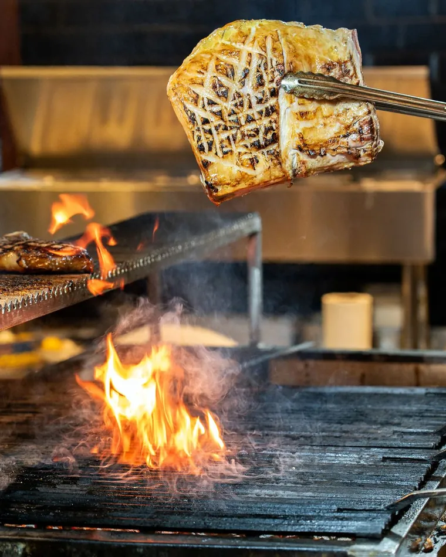
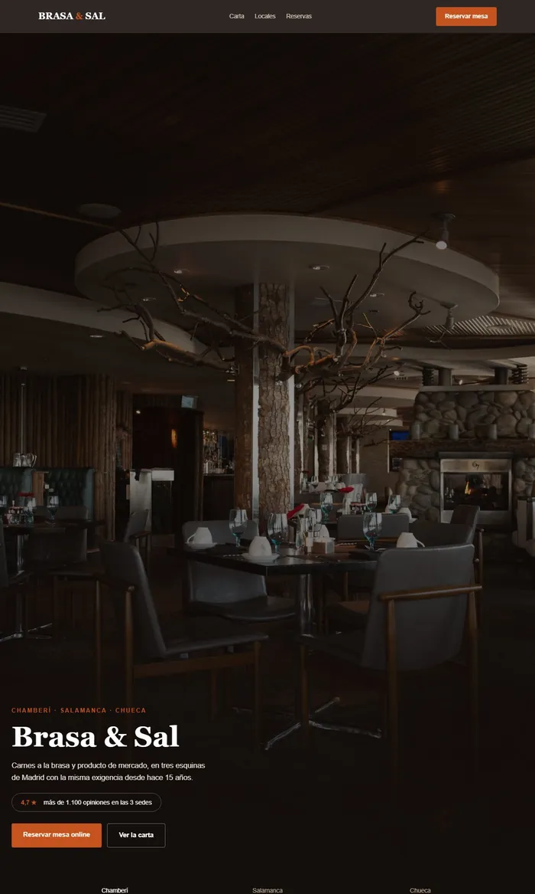
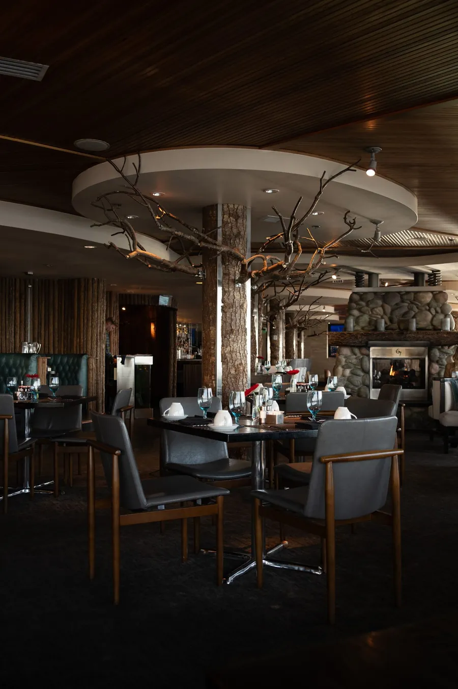

Brasa & Sal
Tres casas · Madrid
Restauración · SEO local y reservas
Tres casas, un solo negocio
Quince años ganándose la reputación por separado, y Google sin entender que son la misma casa.
Proyecto de muestra — la marca es nuestra, el método es el real01 · El problema
Cada local, un criterio distinto
Compiten entre ellos por el mismo sitio en el mapa, y quien pierde siempre es el grupo.
Tres categorías distintas para el mismo negocio. Donde se cruzan, Google elige una sola ficha — y no es la que le conviene al cliente.
02 · El diagnóstico
El daño no lo hacía la competencia
| Fichas de Google | Categorías, horarios y fotos distintos en los tres. | Alta |
| Nombre y dirección | El nombre del grupo aparece de cuatro formas distintas entre la web, Google y las plataformas de reserva. | Alta |
| Reservas | Solo por teléfono y en el horario de cada local. | Alta |
| Marca | Nada conecta los tres en internet. Cada uno se percibe como un negocio independiente, y la reputación conjunta no le sirve a ninguno. | Media |

03 · El trabajo
Un grupo, tres páginas, un solo criterio
Cada local, su página; los tres, lo mismo dicho igual. Una estructura, tres juegos de datos.
Local
Brasa & Sal · Chamberí
Restaurante de brasa
- Valoración
- 4,7★ del grupo · más de 1.100 opiniones
- Horario
- Completo, cocina incluida, igual en los tres
- Fotos
- Mismo criterio de imagen en los tres locales
- Reserva
- En línea, a cualquier hora
Los tres dicen lo mismo de la misma forma. Quien busca no tiene que adivinar cuál le toca, y la reputación de los tres empuja a la vez.
- Qué demuestra
- Que tres locales pueden compartir una estructura sin competir entre ellos. El cambio es de criterio, no de dinero.
- A quién le habla
- A quien lleva varios locales y hoy tiene una ficha, un nombre y un horario distinto en cada uno, sin haberlo decidido nunca.


04 · El embudo
De solo teléfono a cualquier hora
No un botón de reservar: el camino entero, desde que alguien entra hasta que se sienta.
Sin obligar a saberse las tres direcciones de memoria.
El momento en el que hoy se pierde la mitad de la gente.
Cada campo de más es gente que se cae por el camino.
Por email o WhatsApp, automático.
El recordatorio no estaba en el diagnóstico. Salió hablando con los encargados: lo que dolía no era llenar mesas, era quien reserva y no aparece.
05 · El resultado
Lo que busca conseguir
Objetivos de propuesta, basados en referencias de SEO local para restauración con varios locales. No son resultados medidos, y esta página no va a decir que lo sean.
Medido el 30 de agosto de 2026 sobre esta misma página, en un móvil de gama media con la red y el procesador limitados. Se repite con puertas.py.
Solo hacía falta que Google entendiera que son la misma casa.
Zyad Bennani · fundador de Faro Digital
Lo que se usó aquí
SEO local y embudo de reservas
- SEO local
- Ficha de Google
- Multi-local
- Diseño web
- UX/UI
- Embudo de conversión
- Automatización